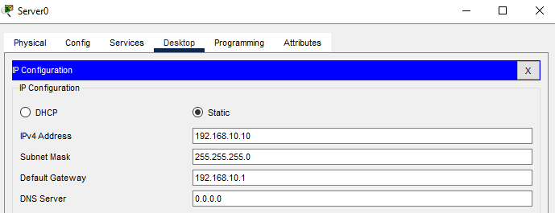
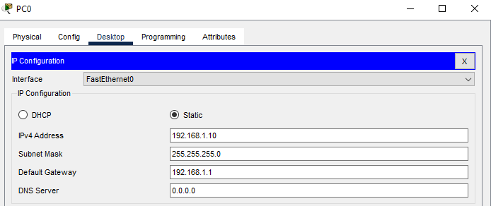
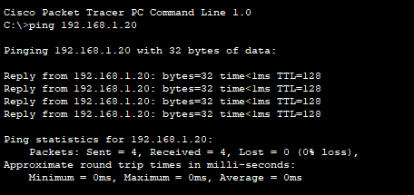
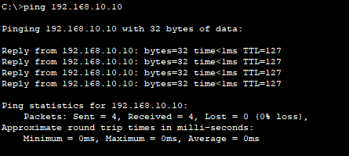
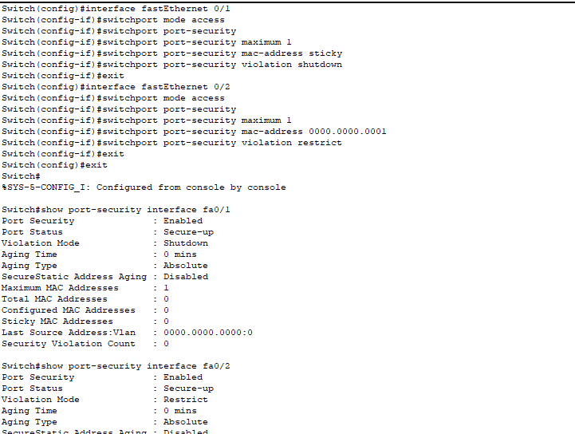
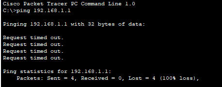
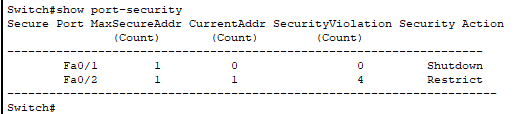
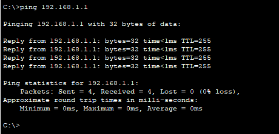

Network Authentication and Access Control Issues
Problem Description
Issue Overview:
Network authentication ensures that only authorized devices can access network resources. This scenario demonstrates MAC-based port security authentication where devices are denied access if their MAC addresses are not in the allowed list. This is a common first line of defense in network security.
Common Symptoms:
- Legitimate devices unable to connect to the network
- No network connectivity despite correct IP configuration
- Port security violations in switch logs
- Intermittent connectivity issues
- New devices cannot access network resources
Root Causes:
- MAC address not registered in authentication database
- Incorrect MAC address configured on switch port
- Port security misconfiguration
- Maximum MAC addresses limit reached
- Authentication server connectivity issues
- Expired or invalid credentials
Network Setup
Network Components:
- 1x Cisco 2911 Router (Router0)
- 1x Cisco 2960-24TT Switch (Switch0)
- 1x Generic Server (Server0 - Authentication Server)
- 2x Client PCs (PC0, PC1)
Network Design:
- Server Network: 192.168.10.0/24
- Client Network: 192.168.1.0/24
- Router acts as gateway between networks
- Switch enforces MAC-based authentication
Initial Configuration
Server Configuration:
Authentication Server configured with IP address 192.168.10.10/24
PC0 Configuration:
PC0 configured with IP address 192.168.1.10/24
Router Configuration:
interface GigabitEthernet0/0
ip address 192.168.10.1 255.255.255.0
no shutdown
!
interface GigabitEthernet0/1
ip address 192.168.1.1 255.255.255.0
no shutdownInitial Connectivity Test
PC to PC Communication:
Initial connectivity between PC0 and PC1 is successful before implementing port security.
PC to Server Communication:
PC0 can successfully reach the authentication server, confirming routing is working correctly.
Port Security Configuration
MAC-Based Authentication Setup:
interface FastEthernet0/1
switchport mode access
switchport port-security
switchport port-security maximum 1
switchport port-security mac-address sticky
switchport port-security violation shutdown
!
interface FastEthernet0/2
switchport mode access
switchport port-security
switchport port-security maximum 1
switchport port-security mac-address 0000.0000.0001
switchport port-security violation restrictPort security is configured with:
- Fa0/1: Dynamic MAC learning (sticky) for PC0
- Fa0/2: Static MAC address that doesn't match PC1's actual MAC
- This will cause PC1 to be denied network access
Authentication Problem Demonstration
PC1 Access Denied:
PC1 cannot access the network because its MAC address (0004.9A92.9083) doesn't match the configured allowed MAC address (0000.0000.0001).
Port Security Status:
The port security status shows that Fa0/2 is configured with "Restrict" action, which silently drops packets from unauthorized MAC addresses without shutting down the port.
Solution Steps
Step 1: Identify the Denied Device's MAC Address
Check the actual MAC address of PC1:
- Click on PC1 → Config tab
- Note the MAC Address: 0004.9A92.9083
Step 2: Update Port Security Configuration
Configure the switch to allow PC1's actual MAC address:
Switch>enable
Switch#configure terminal
Switch(config)#interface fastEthernet 0/2
Switch(config-if)#no switchport port-security mac-address 0000.0000.0001
Switch(config-if)#switchport port-security mac-address 0004.9A92.9083
Switch(config-if)#exitStep 3: Verify Configuration
Check that the new MAC address is configured:
Switch#show port-security interface fastEthernet 0/2Step 4: Test Connectivity
Verify that PC1 can now access the network:
- From PC1, ping the gateway (192.168.1.1)
- Ping other devices on the network
Resolution Verification
Successful Authentication:
After updating the allowed MAC address, PC1 can successfully access the network and communicate with other devices.
Final Port Security Status:

Port security status shows no violations, confirming that both PCs are now properly authenticated and can access the network.
Advanced Authentication Methods
802.1X Authentication
For enterprise environments, implement 802.1X:
Switch(config)#aaa new-model
Switch(config)#aaa authentication dot1x default group radius
Switch(config)#dot1x system-auth-control
Switch(config)#interface range fa0/1-24
Switch(config-if-range)#dot1x port-control autoRADIUS Server Configuration
Configure RADIUS server for centralized authentication:
Switch(config)#radius-server host 192.168.10.10 key cisco123
Switch(config)#radius-server timeout 10
Switch(config)#radius-server retransmit 3Dynamic VLAN Assignment
Assign VLANs based on authentication:
Switch(config)#interface fa0/1
Switch(config-if)#switchport mode access
Switch(config-if)#dot1x pae authenticator
Switch(config-if)#dot1x timeout quiet-period 10Troubleshooting Guide
Common Issues and Solutions:
- Issue: Device cannot connect despite correct credentials
Solution: Check MAC address filtering and ensure device is in allowed list - Issue: Port goes into err-disabled state
Solution: Clear port security violations and reconfigure with correct MAC - Issue: Intermittent authentication failures
Solution: Check RADIUS server connectivity and timeout settings - Issue: New devices cannot be added
Solution: Increase maximum MAC addresses allowed or use dynamic learning
Verification Commands:
show port-security- Display port security summaryshow port-security interface [interface]- Check specific port securityshow port-security address- View secure MAC addressesshow dot1x all- Display 802.1X statusshow authentication sessions- View active authentication sessions
Best Practices
- Implement 802.1X for scalable enterprise authentication
- Use RADIUS/TACACS+ for centralized authentication management
- Enable port security on all access ports
- Configure appropriate violation modes based on security requirements
- Implement MAC address bypass (MAB) for non-802.1X devices
- Use dynamic VLAN assignment for network segmentation
- Monitor authentication logs regularly
- Implement guest VLAN for unauthorized devices
- Configure authentication timers appropriately
- Document all static MAC address assignments
- Regularly audit and update authentication policies
- Implement redundant authentication servers
- Use certificate-based authentication for higher security
- Enable accounting for authentication events
Security Considerations
Additional Security Measures:
- Enable DHCP snooping to prevent rogue DHCP servers
- Implement Dynamic ARP Inspection (DAI)
- Use IP Source Guard to prevent IP spoofing
- Configure storm control to prevent DoS attacks
- Enable BPDU Guard on access ports
- Implement private VLANs for additional isolation
Packet Tracer Simulation
Download the complete Packet Tracer simulation file to practice authentication configuration and troubleshooting:
Download Simulation File